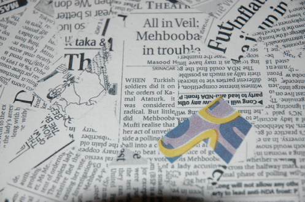

15 AĞUSTOS
Pazarlık için çok iyi bir koz var artık elimde. Hatıra olsun diye kaldığımız otellerin faturalarını, ziyaret ettiğimiz müzelerin biletlerini ve bazı ufak özel hatıraları bu günlüğün içinde saklıyoruz. Külüstür bir otelde görevli fahiş fiyat çekince üşenmeyip ön bagajı açıyorum ve Jewel Otel’in faturasını çıkartıp karşı saldırıya geçiyorum. Çoğu yerde bisikletlerimizi gören görevlilerden çok güzel indirimler aldık. Bu seferki görevli normalin çok üstünde istiyor. Türkiye’yle kıyaslarsak ödediğimiz paralar çok az gerçekten. Ama burası için yüksek olan bu fiyatları duyunca insan enayi yerine konmak istemiyor. O yüzden atış serbest diyorum. Makbuzu elimde saklayarak konuşuyorum görevliyle. Adama önce Jewel Otel’i soruyorum, bildiğini söylüyor, buradan güzel mi diyorum (işte bu tuzak soru) “Evet” diyor. İşte al bakalım sana dün Jewel otelde kaldığımız fiyat diyorum nakavt olacakları beklentisiyle. Bu fiyata kaldığımıza inanamıyorlar. Ben de sizin fiyatınıza inanamıyorum diyorum. Laf ağızlarına tıkılıyor. Tabii ki Hint İngilizcesi konuşan birisi için bu tıkaç pek işe yaramıyor. Dakikada 300 kelime konuşabilen bu insanlar hâlâ kendi fiyatlarında ısrar ediyorlar. “Sabah kalktığınızda o oteldekinden daha iyi hissedeceksiniz” diyorlar. Ya da ben öyle bir şey anlıyorum. Resepsiyon masasına onların ve benim söylediğim fiyatın yaklaşık ortası kadar bir miktar bırakıyorum ve pasaportları da yanına bırakıyorum. Pazarlığın memleketinden geliyorum kardeşim ben. Bakıyorum paşa paşa geliyor arkamdan anahtarlarla. Burası için yine de fazla ama ne yapalım artık.

Hindistan Karnel.
Yavaş servis sayesinde fark ettiğimiz hoş bir sürpriz.